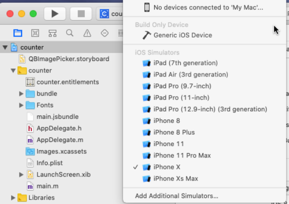
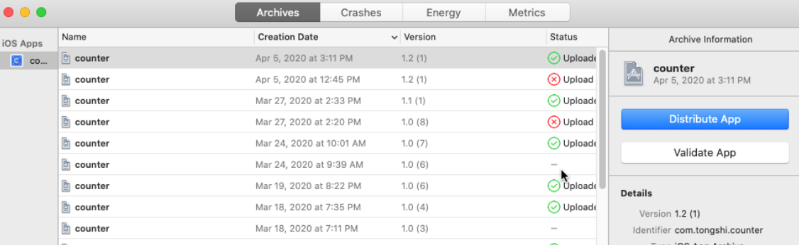
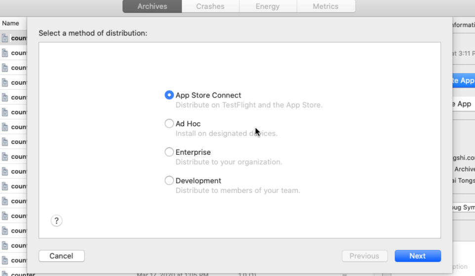

IOS AppStore审核七进七出¶
背景¶
关于上架流程可以在AU的帮助文档里学到很多
发布准备¶
首先是登陆苹果开发者官网¶
申请IOS证书
生成描述文件
导入到xcode中
在devices中添加调试设备的UUID（用来真机测试,获取UUID可以使用蒲公英的扫码功能）
（然后事实证明，其实证书和描述文件都不用做，因为Xcode有AutoSign的功能）
其次是应用打IPA包¶
首先要能够在xcode中Build成功，并对RN的JS打包，参考 IOS踩坑记录-js打包。
General中确认版本号正确，Devices选择Generic IOS Device
导航栏 Product - archive
选择 distribute 发布
第一次真机测试选择development（Ad Hoc），最后一次确认无误后选择App store上传即可
选择development打完包以后，export导出，然后使用蒲公英等类似的分发平台，将IPA包分发到真机上进行测试。
6. 选择App Store上传后，可以进入 itunesConnect（Appstore） 官网进行发布。
准备好上架材料¶
5.5英寸(Iphone X)和6.5英寸(Iphone XS MAX)屏幕的IOS界面截图,打开模拟器后cmd+S截图
应用简介、新版本特性
隐私协议网址
AppIcon 1024*1024
审核-七进七出¶
抠细节¶
第二波闭门羹–轮播图中的屏幕内操作系统不是IOS。
Guideline 2.3.10 - Performance - Accurate Metadata
We noticed that your app or its metadata includes irrelevant third-party platform information.
Specifically, your app includes non-iOS device images in the onboarding screens.
Referencing third-party platforms in your app or its metadata is not permitted on the App Store unless there is specific interactive functionality.
我苦笑，苹果真抠细节。
踏进门槛被踢出来¶
亲爱的开发者，我们发现您的包中含有应用内支付（Alipay）,根据Guideline巴拉巴拉，所有应用内购必须集成使用AppStore-InAppPurchase（IAP）。
头秃了一波，我千疮百孔的支付逻辑被迫重生，参见 IOS内购奔溃一条龙（IAP）。
搞心态¶
Dear Developer,
We identified one or more issues with a recent delivery for your app, "智能钢筋计数" 1.0 (2). Your delivery was successful, but you may wish to correct the following issues in your next delivery:
ITMS-90725: SDK Version Issue - This app was built with the iOS 12.1 SDK. Starting April 2020, all iOS apps submitted to the App Store must be built with the iOS 13 SDK or later, included in Xcode 11 or later.
After you’ve corrected the issues, you can upload a new binary to App Store Connect.
Best regards,
The App Store Team
哟，2020新规定，苹果又抽风了。
这波我哭了，之前使用的低版本MacOS 10.14 装了Xcode10.1，这不是逼我升级黑苹果嘛
连夜下了新版的黑苹果镜像，在Mac中点开dmg成功更新。
然后在Xcode官网点击下载了推荐页的Xcode11.4-beta版（伏笔）
自己搞自己¶
浪交一发，又被退了回来，这回我真的来火了。
一看，说是使用的Xcode里的SDK版本不行，GuideLine让我回退版本。
冷静了之后发现了问题是出在下载的Beta版本上。只好重装Xcode11.3.1。
最后的最后¶
终于提交成功了。